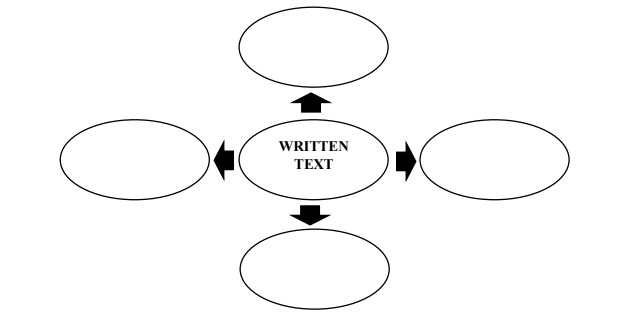
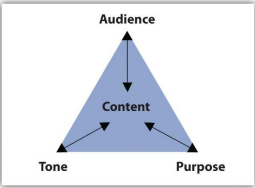
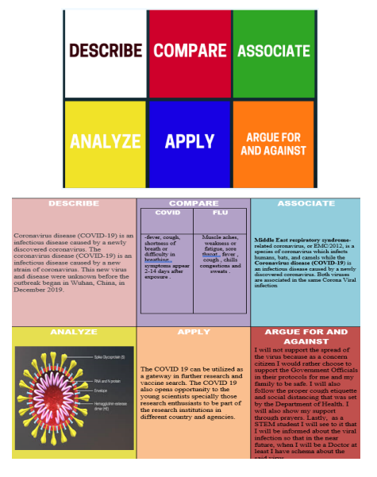

-
UNIT II: DEVELOPING A CONCEPT IN A WRITING TASK
-

UNIT II: DEVELOPING A CONCEPT IN A WRITING TASK
-

UNIT II: DEVELOPING A CONCEPT IN A WRITING TASK
-
UNIT II: DEVELOPING A CONCEPT IN A WRITING TASK


UNIT II: DEVELOPING A CONCEPT IN A WRITING TASK
 INTRODUCTION
INTRODUCTION
The first questions a writer should ask himself is "Why am I writing?", "What am I going to write", "What is my goal or my purpose for writing?", and "How will I start writing?". For many writing contexts, your immediate purpose may be to complete an assignment or to get a good grade. But the long-range factors to consider like purpose in writing, audience in writing, and topics in writing fall under one essential component of a any written output, which is content. In order to communicate successfully to your audience and to better deliver the intended purpose and message, building and effective contet for writing will make you a better writer.
 LEARNING OBJECTIVES
LEARNING OBJECTIVES
At the end of the lesson, you are expected to:
- Share insights about a written text using a graphic organizer;
- Understand the nature of content/ideas in writing; and
- Develop mastery of the different brainstorming strategies.
 ACTIVATING PRIOR KNOWLEDGE
ACTIVATING PRIOR KNOWLEDGE
ACTIVITY 1
Directions: Provide the graphic organizer below with your ideas about written text. Copy the graphic organizer in a separate sheet of paper and write your answers. 
 PRESENTATION OF CONTENT
PRESENTATION OF CONTENT
TOPIC 1: NATURE OF CONTENT / IDEAS
Content/Ideas in writing refers to the development of a clear, meaningful, and substantial ideas in a writing task. It involves a purpose in writing, the interpretation of relevant and varied ideas to the topic being discussed, and the accuracy of details present in a written output.
Imagine reading one long block of text, with each idea blurring into the next because clarity is not emphasized, most probably, you can't focus easily and you can't follow all points being discussed. Even if you are reading a thrilling novel or an interesting news article, you will likely lose interest in what the author has to say very quickly. Same with writing, if there is no clear and concise content or ideas, you will rend to lose focus in making your points understandable.
Hence, it is impotant to understand these three elements of content in writing:
- Purpose. The reason the writer composes the paragraph.
- Tone. The attitude the writer conveys about the paragraph’s subject.
-
Audience.The individual or group whom the writer intends to address.
 Figure 6.1 Purpose, Audience, Tone, and Content Triangle
The combination of these three: purpose, audience, and tone, dictate what the paragraph covers and how it will support one main point.
“Audience” is the intended readers of your paper. This can be a relative, a friend or a colleague. Usually in academic setting, your audience can be your classmates, teachers, professors and other students. = In every case, thinking about who will read the paper changes what you write and how you write it. Ask yourself some questions about your audience. Who will read this paper? How much do they already know about the topic, and what do you need to tell them? Why will your audience read what you write, and can you make them want to keep reading? How are they likely to react to what you are saying? The answers to each of these questions will affect both the content and the form of your writing.
Other element is the “Purpose” referring to your reasons inwriting, and what effect you hope to have. The most common purpose in writing is to explain an idea, a concept or a an object. Sometimes, this purpose may want to persuade or inlfunce readers and their thinking about an idea or a concept.. In doing so, you may need to describe an object, place, or activity. Other times, you may choose to narrate set of events, in the manner of a story. Furthermore, some may want to express feelings, to explore an idea or perhaps entertain or amuse listeners or readers, to inform people or explain an idea, to argue for or against an idea in order to persuade others to believe or act in a certain way, and to mediate or negotiate a solution in a tense or difficult situation.
“Tone”, on the other hand, is a more complex term. It describes the feeling of your writing; in other words, the formality or informality of your writing. This connects the intensity of your own experiences, to your objectives, and the attitude or position you hold towards your subject. Audience and purpose have a large effect on tone. Most academic writing is formal and usually objective in tone, though in some fields – especially in the humanities and some social sciences – subjectivity is valued.
Getting back to the writing process examined in the previous unit, we can say that all written communication, general purpose is considered as the end-goal of a written communication. Writing with a real and clear purpose draws the writer to the desire of connecting, communicating and influencing the world.
Can you remember a time when you were asked to complete a task in which you could not see and make any relevance to the subject? Being under this situation is, indeedn, infuriating and draining. It drains all energy from useless thinking. In contrast, the energy that comes from setting meaningful and purposeful task is fulfilling. Therefore, another factor to consider in building a content is the relevance to the subject being discusses. Relevance is an all-important feature of good essays and written papers. It is very important that all parts of an essay are directly related to the subject. Any parts which wander away from the subject concerned will weaken its effectiveness. Consequently, it will destroy the accuracy of the content.
TOPIC 2: STRATEGIES IN DEVELOPING AN EFFECTIVE CONTENT
BRAINSTORMING
Brainstorming is an informal way of generating topics to write about, as well as formulating the points you can make about your topic. It can be done at any point in a writing process. The crucial point about brainstorming is that there should be no pressure to be brilliant. You should open your mind to whatever that pops into it.
Brainstorming helps you generate topics and narrow them down to a few important ideas. It improves your creative thinking skills and deepens your understanding of a possible topic.
The effectiveness of brainstorming is that one idea can trigger another idea in an unrestrained manner. Creative thinkers must allow themselves to think the trivial and the impossible for the purpose of brainstorming is to bring about this kind of freethinking.
FIVE METHODS IN BRAINSTORMING
-
LISTING
This is appropriate for textual people or those who are more comfortable in processing words than visuals. Involves writing the main topic and listing down the related ideas. Don’t outline at this point. Outlining stalls the creative act of brainstorming by requiring you to evaluate and organize your thoughts. Remember, brainstorming should be an uninhibited activity.
Example:SUBJECT: UNEMPLOYMENT
Related Topics: Jobs
Poverty
Salary
Lack of Education
Low Salary
Lack fo Money
Fresh Graduate
-
IDEA MAP
Also know as idea webbing or clustering, is a graphic form of listing that simply involves jotting down ideas on a large writing surface and then making connections by associating similarly themed ideas with color-coded circles or underlines of distinct patterns and then indicating other relationships by linking with lines.
How to do this:
- Put the big idea or question at the center
- Add a related idea by writing it down in a circle near the big idea, drawing a line between the two to show how ideas are connected.
-
CUBING
In this strategy, a topic or idea is examined from six distinct viewpoints — hence the name. Describe the topic (what is it?), compare it (what is it like or unlike?), associate it (what does it make you think of?), analyze it (what constituent parts is it made of?), apply it (how can it be used?), and argue for and/or against it (how can you support or oppose it?).
Cubing was developed as a critical-thinking exercise to help students express their thoughts in opinion essays, but it can be adapted for general nonfiction writing, though it is of limited value for fiction.
 -
FREEWRITING
This is a strategy that requires you to write nonstop even if you do not know what to write. Have a quantitative goal: 500 words, three pages, five minutes — it doesn’t matter. Just write. Do not pause in order to spell correctly or write flawlessly, and don’t go back to rewrite. Turn off your inner editor. Do not strive for coherence. Just write. Consider closing your eyes while you’re writing or typing, or turn the computer monitor off. Just write.
-
RESEARCHING
You know the topic you want to write about, or the outline of a novel’s plot, but you don’t know how to populate the piece with ideas?
Go to the library or check out websites on the internet. Make a list or map of the new ideas. Furhermore, go to the reference section of a library, or call up reference web sites. As you read about a current or past event, or a contemporary or historical issue, record the ideas in list or map form. You might find the key point you’ve been looking for, or change the one you had in favor of this new detail.
 APPLICATION
APPLICATION
ACTIVITY 2: WHERE DO I BELONG?
Directions: Which of the following activities are done on the pre-writing, writing, or re-writing stage? Write your answer on the space before the number.
_____________________1. Gather information.
_____________________2. Do free writing.
_____________________3. Choose a topic.
_____________________4. Brainstorm.
_____________________5. Cluster.
_____________________6. Work on the details.
_____________________7. Check the mechanics.
_____________________8. Have fun.
_____________________9. Ensure relevance of content.
_____________________10. Follow the flow of ideas.
ACTIVITY 3
Directions: Answer the following questions.
-
Which of the following gives you more excitement in writing?
- Academic writing like reports, essays, and reflection papers
- Writing a piece of literature like poems, short stories, and novels
- Research writing
- Journalistic writing
- Daily journals like diaries
- Expressive writing like love letters, posters and appreciation letter
Answer: __________________________
-
What is your reason for choosing your answer in number 1?
Answer: __________________________
-
How important is writing in your academic life?
Answer: __________________________
-
How important is writing in your personal liefe?
Answer: __________________________
-
How important is writing in your future career?
Answer: __________________________
 REFLECTION
REFLECTION